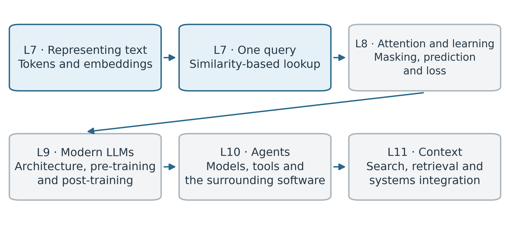
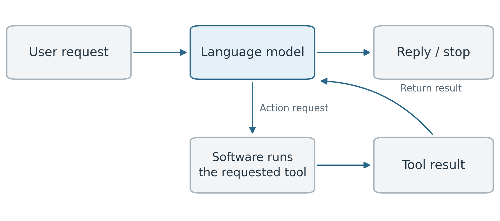

Text and agents
Text data and other sequential data
We now turn to text data and language models. Text appears in many engineering settings, including technical reports, instructions and computer code. It can also describe observations, such as what a player is doing in a video.
Like time series and video, text is sequential data. The order of the elements in the sequence matters: “the player in black is defending the player in red” describes a different relationship from “the player in red is defending the player in black”.
Text also has syntactic and semantic relationships: there are patterns in how words fit together grammatically and how their meanings relate. For example, we write “the player is defending” but “the players are defending”. The verb form depends on whether we are referring to one player or several. In our basketball description, “in black” describes the player’s clothing, while “defending” describes their relationship to another player.
We therefore want a model that, when predicting or processing some particular element of the sequence, can use information from the other sequence elements in a structured way. A useful starting task is predicting what comes next in a sequence. This is an online prediction task: as in online tracking, we use the information available so far when making the prediction.
For example, suppose we have the text:
The player in black is defending the player in
A plausible continuation is “red”, although the text does not determine the colour uniquely. A language model assigns probabilities to possible continuations based on the preceding text.
In practice, we divide text into smaller pieces called tokens, which need not be whole words. The generative language models we will study predict the next token from the tokens supplied so far. During training, we can form examples from existing text: a preceding sequence supplies the input, and the token that follows it supplies the target. For our complete sentence, the observed continuation is “red”. The target is already present in the text, so someone does not need to label it separately.
Once the model is trained, we can use its predictions to generate text. We choose a next token using the predicted probabilities and append it to the sequence. The extended sequence then supplies the input for another prediction. Repeating this process builds up the generated text.
We will first look at how tokens are represented by numerical vectors, then develop attention as a way of combining information from the sequence. These operations will help us understand how modern large language models are constructed. Later, we will connect language models to tools: the model can request an action, and the surrounding software can execute it and return the result. This provides the basis for the agent systems we will study.
From text representations to agents

